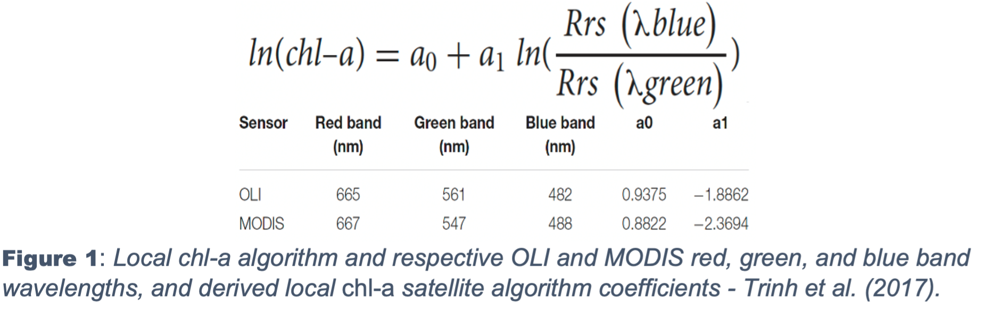
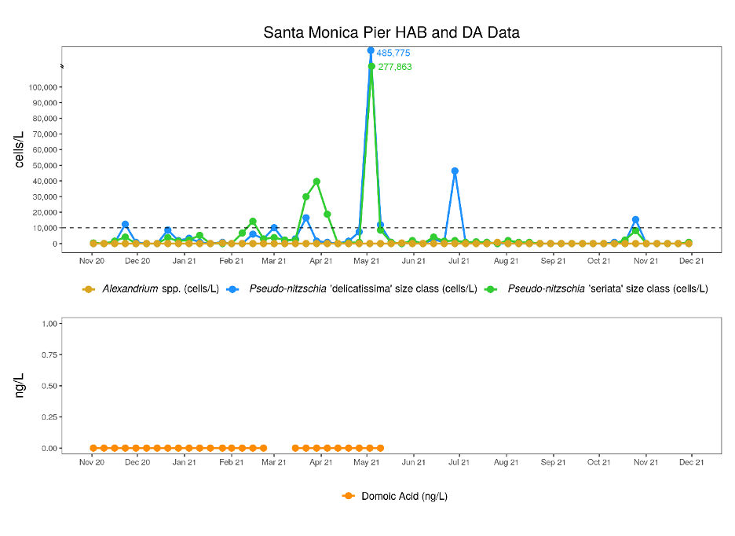

Introduction
The research performed by Trinh et al. (2017) is centered on the capabilities of Landsat 8 OLI and Aqua MODIS to monitor water quality in the Santa Monica Bay (SMB). The water quality of the Santa Monica Bay is directly impacted by the adjacent Hyperion Treatment Plant (HTP), which discharges treated wastewater into its coastal waters. Wastewater discharge increases contaminant and nitrogen concentrations,which increase the likelihood of phytoplankton blooms and contaminant exposures. The phytoplankton biomass in the surface ocean is assessed by remotely sensing chlorophyll-a (chl-a) pigments within phytoplankton. To monitor the water quality impacted by wastewater discharge of the HTP, the researchers argue that the algorithms applied to remote sensing data to measure chlorophyll-a concentrations should be derived locally as opposed to the broad empirical algorithms used in the standard products of chlorophyll-a concentrations. A planned shutdown of the HTP in 2015, known as a diversion event, directly discharged wastewater 1-mile offshore in the shallow waters of the SMB instead of the ordinarily 5-mile outfall. The research uses the diversion event as a backdrop to assess Landsat 8 OLI and Aqua MODIS in their capability to measure chlorophyll-a concentrations using local vs. empirical algorithms and detect wastewater plumes.
The analysis of the SMB during increased wastewater discharge in shallow waters is expanded by applying the findings of Trinh et al. to the July 11th, 2021, HTP failure in creating a time series of the SMB. At the time of the incident, 17 million gallons of untreated sewage were released 1-mile offshore, with reports of the plant operating at a diminished capacity several months after the initial failure.
Data
In-situ measurements of the study were taken before, during, and after the wastewater diversion event along a grid of 13 stations between August 26th and November 11th and, when possible, coinciding during satellite overpass in the SMB. At all stations, hydrographic profiles were collected using an SBE 19-plus Conductivity-Temperature-Depth package with chlorophyll fluorescence collected from 1m below the surface to 1m above the ocean floor. In-situ surface chlorophyll-a concentrations were derived from water samples taken on ten different dates at selected stations. Water samples were taken at 1 meter and analyzed fluorometrically for chl-a in a laboratory using a non-acidification method for 96 measurements. In-situ hyperspectral remote sensing reflectance was measured and derived from field measurements of spectral downwelling and upwelling irradiance using a Satlantic HyperPRO free-falling optical profiler equipped with a surface irradiance reference for a total of 49 measurements on nine separate dates. Level 1 satellite data was acquired from Landsat 8 from OLI, TIRS sensors, and level 1 satellite data from Aqua MODIS, TIR sensors.
The analysis extension uses Landsat 8 OLI Level-2 surface reflectance products on six dates from June 6th to November 11th, 2021. Level-2 products are corrected for the temporally, spatially, and spectrally varying scattering and absorbing effects of atmospheric gases,aerosols, and water vapor. All images acquired from USGS are centered on 33°10’36.66”N – 118°42’58.32”W, on path 41 row 37 with a WGS84 datum and ellipsoid, on a U1TM Zone 11 projection.
Method
Using 36 measurements of in-situ data, two local chl-a algorithms were developed using respective blue and green wavebands of OLI and MODIS, where the natural log values of the measured surface chl-a concentrations are regressed on the natural log values of blue-green surface reflectance ratios (Figure 1).

MODIS satellite data were used to produce a standard 1-km OC3M product (OC3M algorithm), a regional product (CALFIT algorithm), and application of their own locally derived algorithm to produce chl-a concentrations. Landsat 8 data retrievals from USGS were used to produce a standard OC2 chl-a product and application of their own locally derived algorithm to produce chl-a concentrations. To assess the accuracy of Landsat 8 (OC2) and MODIS (OC3M, CALFIT) algorithms to estimate chl-a concentrations, each algorithm was used with their respective blue-green wavebands (Figure 1) from in-situ measurements and compared to in-situ chl-a concentrations. Landsat 8 and MODIS surface reflectance data were applied to standard algorithms and the researcher’s local algorithm and compared against in-situ chl-a concentrations. A time-series analysis was completed using the local chl-a algorithm for OLI in which maximum chl-a concentrations for each OLI scene were found within Santa Monica Bay. Sea surface temperatures. Level 1 products of Landsat 8 and Aqua MODIS data were atmospherically corrected using a standard multi-scattering, radiative transfer model (TIRS), and iterative near-infrared (NIR) model (TIR). TIRS temperature was retrieved by inverting the atmospherically, and emissivity corrected TIRS radiances using a look-up table. Due to limitations of both OLI and MODIS accuracy and spatial extent of MODIS TIR, TIRS is only used to detect relative SST differences between plume and non-plume waters.
The extension of the analysis acquired images in 2021 on six different dates, July 6th and 22nd, August 7th, October 10th and 26th, and November 11th. The images acquired were the best available in the study area without cloud cover. Pre-processing was performed in R using library packages “rgdal” and “raster” the images of surface reflectance of bands 2-7 were stacked together by date. Each image was masked and cropped using a custom Shapefile derived from a Los Angeles County Shapefile, limiting the extent to the coastal waters of the SMB up to the coastline. Erroneous pixel values that do not fall within the valid range for the Landsat surface reflectance product were overwritten; the valid range for all bands 1-7 is 7273-43636. The scale factor of the images was changed to 100. A time-series analysis was produced using the researchers’ local OLI algorithm of chl-a concentrations applying blue and green bands of each image data and exported for use in Qgis.
Results
Wastewater plume detection via sea surface temperature (SST) was clearly detected by Landsat 8 TIRS, showing the relative temperature difference between the wastewater plume and ambient waters. Before and after the diversion event, no SST anomalies were detected; during the diversion event, at the 1- mile outfall pipe, decreased SSTs were clearly detected ~1 °C colder than the surrounding water. Comparisons to in-situ data were not provided due to TIRS SST data providing skin surface temperature measurements of the top few millimeters of the ocean surface, and in-situ measurements were taken at depths greater than 1m below the surface.
The results of comparing estimated chl-a using standard algorithms and in-situ reflectance were reported as mean percent errors between estimated chl-a values and in-situ values. The OC2 algorithm had a ±40% mean percent error, the paper’s OLI local algorithm yielding a ±30% mean percent error using in-situ reflectance. The OC3M algorithm resulted in a ±35% mean percent error, with the regional CALFIT algorithm reported as more accurately estimating chl-a values but greatly overestimating high chl-a values. The derived local MODIS algorithm using in-situ reflectance resulted in estimated values with a mean percent error of ±32% of in-situ chl-a values. The standard algorithms tended to underestimate mid-level chl-a values and overestimate high chl-a values with respect to measured values, with the highest values falling well above the +30% error. The researcher’s local OLI algorithm was the best performing algorithm, with the lowest mean percent error and more accurate estimated chl-a values.
The researchers used the scenes of Landsat 8 and MODIS on November 11th, 2015, to apply both the local algorithm and the standard chl-a algorithms, as this was the only day the satellite data coincided with in-situ reflectance and chl-a measurements (Figure 2). Overall, OLI chl-a retrievals were more accurate than MODIS. The local OLI chl-a algorithm outperformed MODIS (local and OC3M) and OC2 algorithms with a mean percent error of ∼29% and the smallest RMSE of ∼0.36. The standard OC2 algorithm underestimated chl-a values and had a mean percent error of ∼26% and RMSE of ∼0.58. The local MODIS chl-a algorithm performed better than the OC3M algorithm but still overestimated chl-a concentrations with a mean percent error of ∼37% and RMSE of ∼0.67. The standard OC3M algorithm had a mean percent error of ∼349% and RMSE of∼18.2, performing order of magnitude poorer than the local MODIS chl-a algorithm and either OLI algorithm (local or OC2). Establishing that the researchers Local OLI algorithm performed best, a time series analysis was used to evaluate the chlorophyll-a evolution in response to the wastewater diversion event (Figure 2).

The time series analysis was extended to observe the chlorophyll-a evolution in response to the HPT failure on July 11th, 2021(Figure 3). An initial 17 million gallons (5 million were pumped back) of untreated sewage was discharged through the 1-mile outfall pipe, shown on the researcher’s time series as the shorter black line. Reports indicate that the plant operated at a diminished capacity afterward. To show the evolution of chlorophyll-a, the main images are set to the scale of 7-22, using a cumulative count cut of 2%- 98% to filter out outliers in minimum and maximum values. The top end of the green portion of the scale represents an ~3.0 mg m-3, comparable to the researcher’s time-series scale. The top inset of each image uses individual scales, using a cumulative count cut of 2%- 98% to filter out outliers in minimum and maximum values. Each image’s bottom inset uses a cumulative count cut of 2%- 94% using a true-color image emphasizing the ocean color.

The first image before HTP failure shows elevated chlorophyll-a beginning ~3-miles offshore at ~3.0 mg m-3 with pockets of higher values. The results on 07-22, eleven days after failure, are obfuscated by sporadic cloud coverage; despite this, there is evidence of elevated values of chl-a up against the coastline. In-situ measurements of chl-a concentrations could not be located to corroborate due to Covid-19 sampling restrictions; the only supporting evidence is a graph of Harmful algal blooms (HABs) (Figure 4) of Pseudo-nitzschia measured shortly up thecoast at the Santa Monica Pier. HABs of Pseudo-nitzschia can cause diseases and death in many marine organisms and the humans who consume them. HABs can result in oxygen depletion caused by increased biomass production (Timmerman, 2019). On 8-22, twenty-seven days after the massive HTP failure, chl-a concentration is still exceedingly high along the coastline. The final three images show an average of 1.74 mg m-3 along the coastline when compared to the researcher’s scale is still on the high end. The November spike of Pseudo-nitzschia supports that the diminished capacity of HTP may have influenced any natural variations of phytoplankton biomass.

Summary
The researcher’s central finding is that applying their local chl-a algorithms, developed using in situ chl-a and in-situ reflectance measurements improves chl-a retrievals in the SMB during the 2015 HTP wastewater diversion in comparison to the standard open ocean algorithms. The paper also demonstrates the improved accuracy of chl-a from high-resolution OLI compared to coarser resolution MODIS for coastal chl-a detection. The researcher’s study was the first to use high-resolution Landsat 8 TIRS and OLI for coastal water quality monitoring of wastewater diversions. The extension of the analysis uses the researcher’s improved accuracy to measure the chl-a concentration in response to the HTP failure of 2021. Limited corroborating measurements limited the analysis to visual interpretation. Spatial-Temporal changes in chl-a concentrations are indicative of the possible effect of the 17 million gallons of untreated wastewater discharged into SMB. Further studies can apply these findings to a more in-depth analysis of the damage to the coastal water quality of the SMB and its effect on its marine ecosystems.
References
Timmerman, R. (2021, April 9th). California HAB Bulletin: March 2021 | Southern California Coastal Ocean Observing System. Sccoos.org. https://sccoos.org/california-hab-bulletin/march-2021/
Trinh, R. C., Fichot, C. G., Gierach, M. M., Holt, B., Malakar, N. K., Hulley, G., & Smith, J. (2017). Application of Landsat 8 for Monitoring Impacts of Wastewater Discharge on Coastal Water Quality. Frontiers in Marine Science, 4. https://doi.org/10.3389/fmars.2017.00329
(2022). Hyperion 2021 Recovery (lacitysan.org)